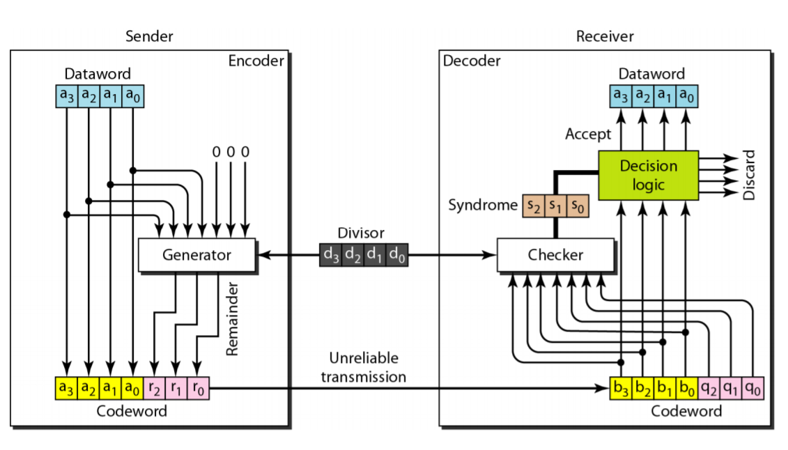
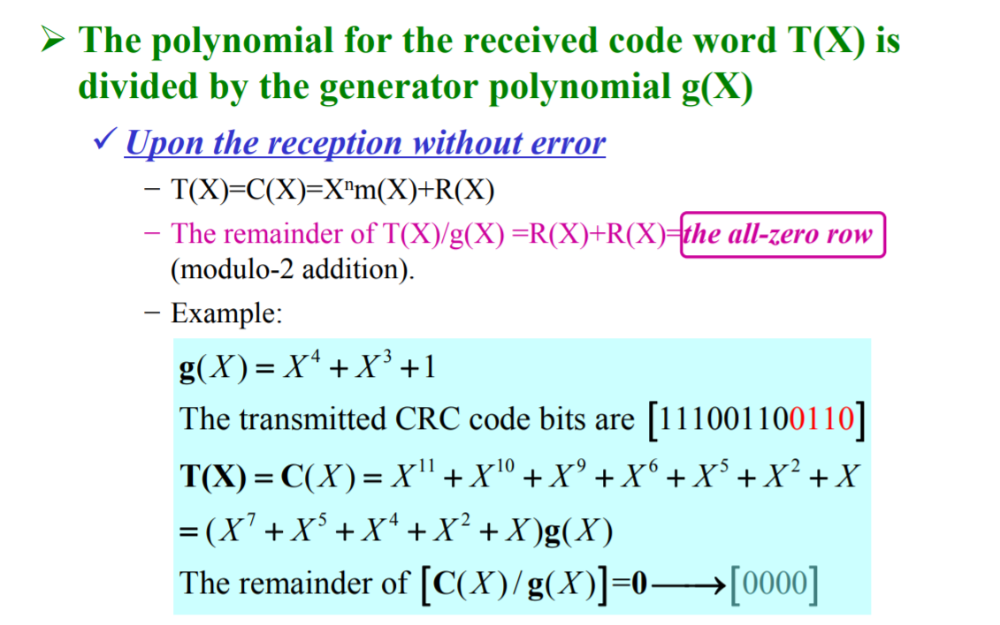

Find Danmaku Sender by Reversing CRC32
2020-07-12
HOME
NOTES RELATED
Introduction
Source


Example
Reversing CRC32
- Generate a reference table (may require several GBs of storage).
from crc32_table import *
gen_crctable()
- Infer user ID based on the reference table
from crc32_reverse import *
find_uid(uid_crc32)
About 8% of CRC32-UIDs are not unique and no way to fix this.